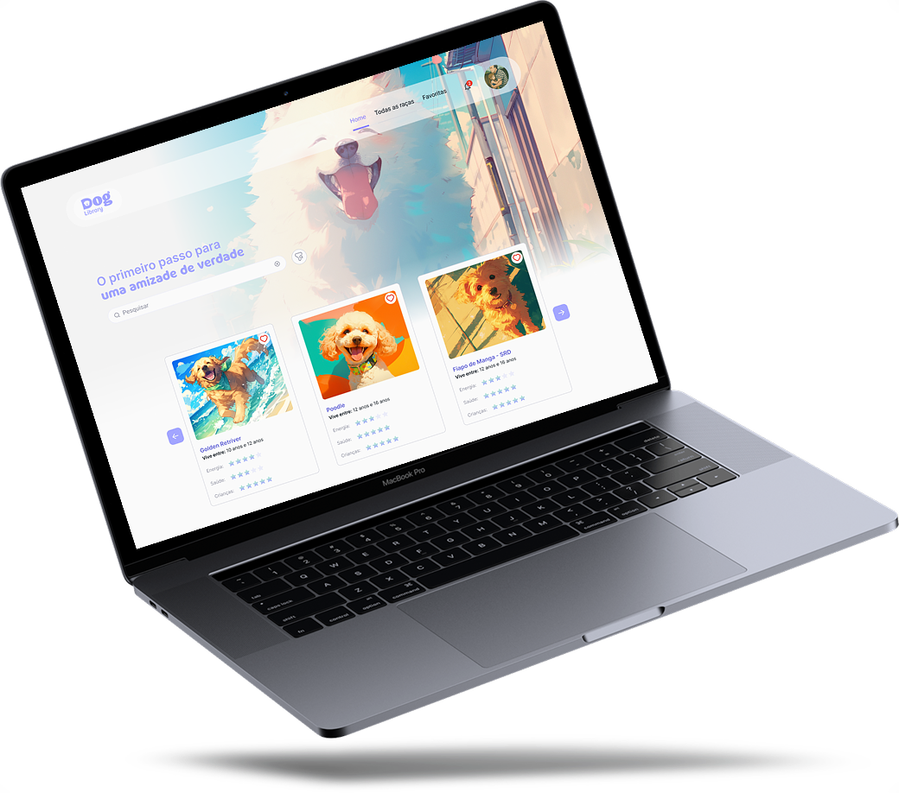
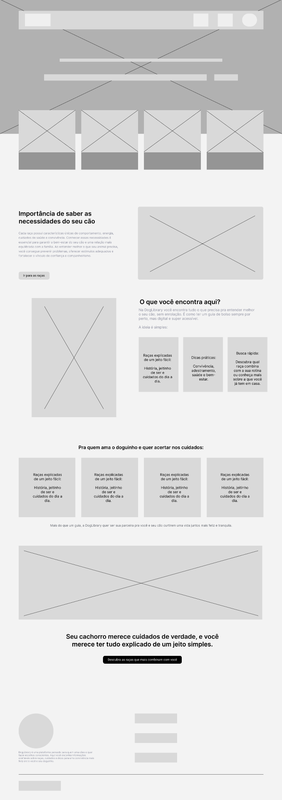
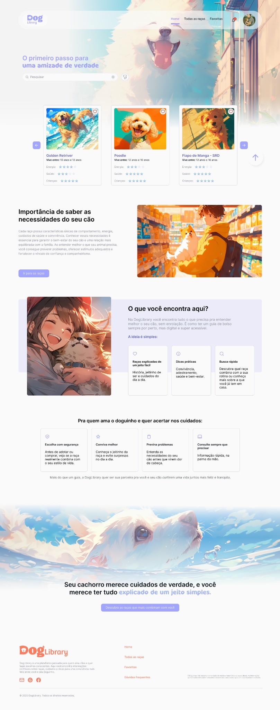
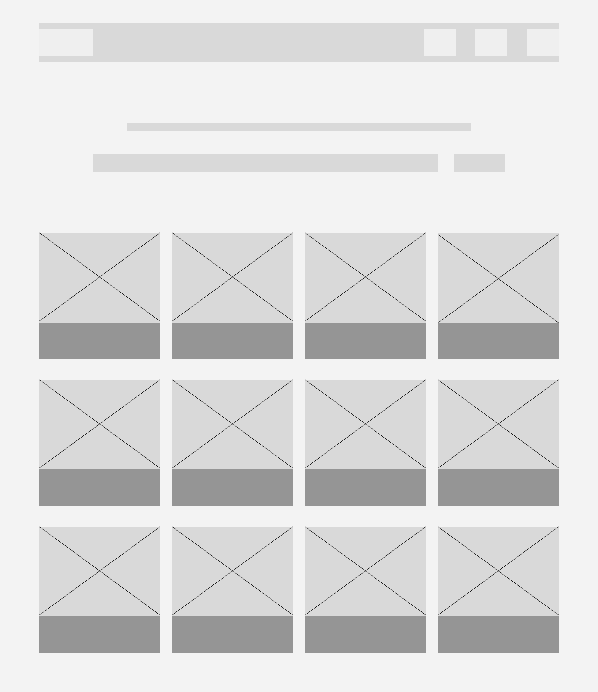
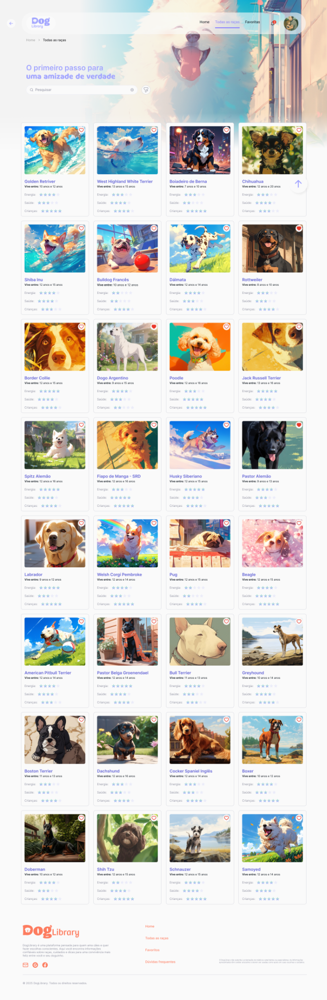
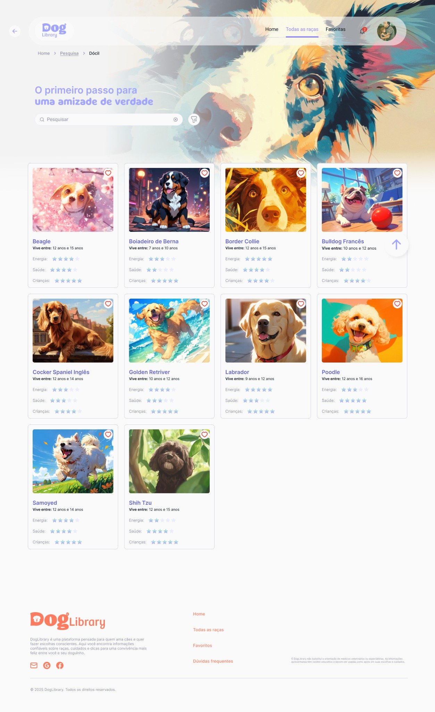

01
Escolha impulsiva
A aparência ou a popularidade pode pesar mais do que necessidades reais de saúde, energia, socialização e rotina.
Case study · UX/UI Design
Uma plataforma criada para apoiar escolhas mais conscientes na hora de encontrar um cão compatível com a rotina, o espaço e o estilo de vida do futuro tutor.

01 — O problema
Muitas pessoas se encantam por uma raça sem entender se ela combina com sua rotina, energia, espaço, tempo disponível e capacidade de cuidado.
A aparência ou a popularidade pode pesar mais do que necessidades reais de saúde, energia, socialização e rotina.
O usuário consulta muitas fontes e ainda assim tem dificuldade para comparar raças com os mesmos critérios.
A decisão passa a considerar não só qual cachorro a pessoa quer, mas qual cachorro combina com sua vida.
02 — Arquitetura
Entrada emocional e direta para a busca por raças.
Critérios como dócil, guarda, crianças, esportivo e preguiçoso.
História, saúde, cuidados, características e alertas.
Continuidade da decisão para comparar depois.
03 — Wireframes




04 — Soluções
O usuário encontra raças a partir de critérios comportamentais e práticos ligados à rotina.
As raças seguem um padrão visual com dados essenciais, facilitando comparação rápida.
Cada raça possui uma página com história, características, saúde, cuidados e alertas.
Raças de interesse podem ser salvas para que a escolha continue com mais calma.
A tela de raça não encontrada mantém o usuário orientado e evita uma experiência sem saída.
Alertas e novidades reforçam continuidade e mantêm o usuário informado.
05 — Sistema visual
Clique nas cores para descobrir como cada uma apoia a experiência, da navegação aos alertas e estados emocionais da interface.
Cada cor revela uso, intenção e função dentro do sistema visual.
06 — Interfaces

Entrada simples, emocional e visual para iniciar a busca por raças.
07 — Decisões de UI
Formas suaves, ilustrações e cores claras tornam o tema mais emocional e acessível.
A interface apresenta primeiro o essencial e aprofunda quando o usuário demonstra interesse.
Cards padronizados permitem analisar raças usando os mesmos critérios.
Favoritos, notificações e elementos visuais reforçam vínculo e continuidade.
O DogLibrary mostrou como UX pode transformar uma decisão afetiva em uma jornada mais clara, responsável e orientada ao bem-estar.